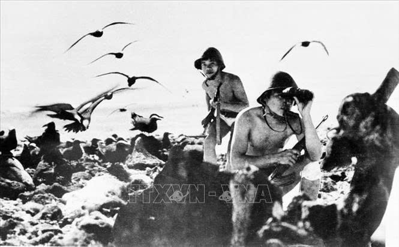
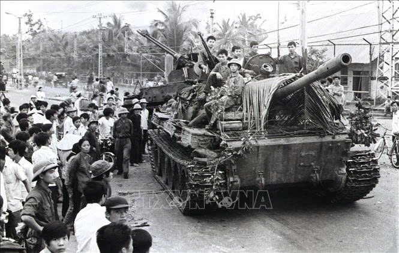
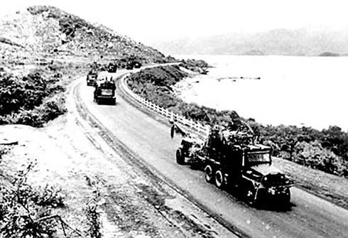

Sau những năm trường kỳ kháng chiến chống thực dân Pháp, nhân dân Khánh Hòa cùng cả nước tiễn đất nước bước sang một trang mới, Hiệp định Giơnevơ (20-7-1954) kết thúc cuộc chiến tranh xâm lược Việt Nam.


Nhưng với mưu đồ tiêu diệt bằng được phong trào yêu nước của nhân dân ta, thôn tính miền Nam chia cắt lâu dài đất nước, đế quốc Mỹ đã ép Pháp dựng nên chế độ độc tài Ngô Đình Diệm hòng thống trị miền Nam Việt Nam.
Đứng trước tình hình trên, dưới sự lãnh đạo của Đảng bộ tỉnh, quân và dân Khánh Hòa cùng với cả nước bước vào giai đoạn cách mạng mới, chống đế quốc Mỹ, tay sai trong cuộc kháng chiến lâu dài, gian khổ, đồng thời rất trang lịch sử của quê hương, đất nước.

Gửi ý kiến của bạn